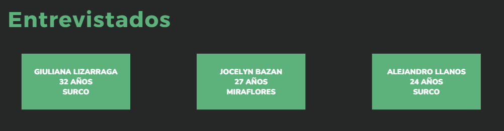

ENTREVISTAS Y RECOPILACIÓN DE DATOS
Esta semana nos enfocamos en llevar a cabo entrevistas con usuarios potenciales para recopilar información crucial sobre sus necesidades y expectativas en relación al sistema de riego automatizado. Las entrevistas nos brindaron datos valiosos sobre los hábitos y desafíos actuales de los usuarios en cuanto al cuidado de sus plantas.
Para asegurar que obtuviéramos información relevante, preparamos un conjunto de preguntas específicas que nos permitieron profundizar en los problemas reales que enfrentan las personas al regar sus plantas. Las entrevistas fueron realizadas a través de llamadas telefónicas y encuestas en línea. El objetivo era comprender cómo las personas que viven solas gestionan el riego de sus plantas y qué dificultades encuentran.
Análisis de Resultados
Tras la recopilación de datos, analizamos las respuestas y encontramos patrones comunes en las necesidades de los usuarios. Muchos de los entrevistados expresaron que no tienen el tiempo suficiente para cuidar adecuadamente sus plantas, ya sea porque se olvidan de regarlas o porque no están en casa durante largos períodos.
Una de las principales conclusiones fue que los usuarios están buscando un sistema que sea fácil de usar y que los ayude a ahorrar tiempo y esfuerzo. Además, muchos mencionaron que les gustaría tener la opción de controlar el sistema de riego a distancia, lo que abre la posibilidad de integrar tecnologías móviles o soluciones basadas en aplicaciones.
Conclusiones de las Entrevistas
Las entrevistas nos dieron una visión clara de las expectativas y necesidades de los usuarios. A partir de esta información, podemos adaptar el diseño del sistema para que sea lo más adecuado posible. Ahora sabemos que los usuarios valoran tanto la sencillez como la eficiencia, lo que nos ayudará a tomar decisiones más informadas al elegir las tecnologías y características del sistema.
En resumen, esta etapa fue fundamental para ajustar nuestras ideas iniciales y asegurarnos de que el producto final sea algo que realmente satisfaga las necesidades de quienes lo utilizarán. Con los datos obtenidos, podemos proceder con el desarrollo de un prototipo más afinado y orientado a resolver los problemas más comunes que enfrentan las personas al cuidar sus plantas.